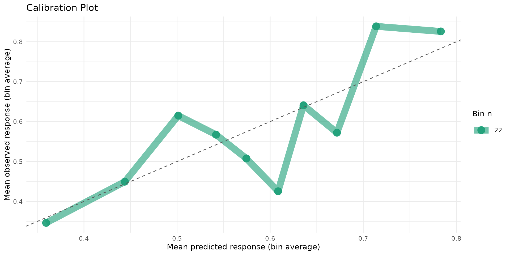
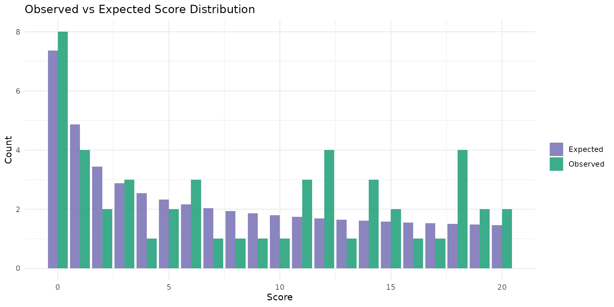
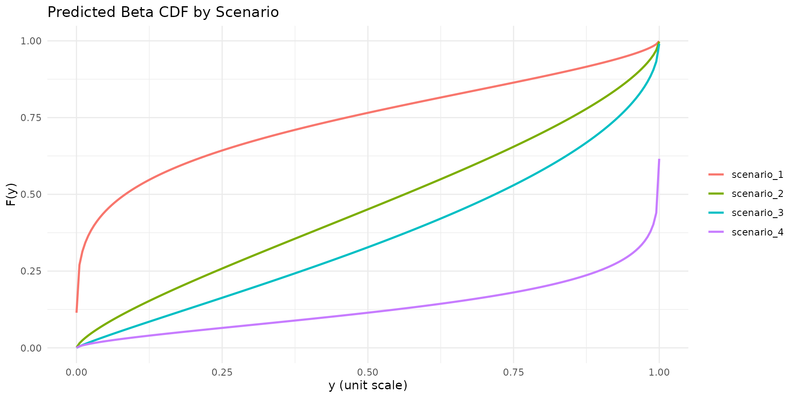
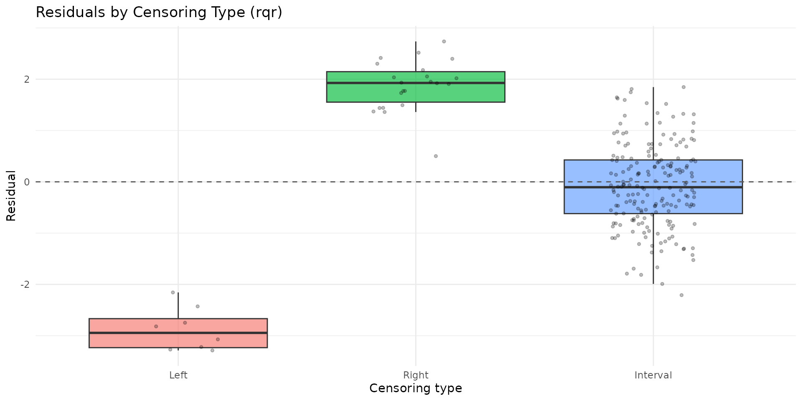

Overview
This vignette presents analyst-oriented tools added to betaregscale for post-estimation workflows:
-
brs_table(): model comparison tables. -
brs_marginaleffects(): average marginal effects (AME). -
brs_predict_scoreprob(): probabilities on the original score scale. -
autoplot.brs():ggplot2diagnostics. -
brs_cv(): repeated k-fold cross-validation.
The examples use bounded scale data under the interval-censored beta regression framework of Lopes (2024).
Mathematical foundations
Complete likelihood by censoring type
For each observation , let indicate exact, left-censored, right-censored, or interval-censored status. With beta CDF , beta density , and interval endpoints , the contribution is:
This is the basis for fitting, prediction, and validation metrics.
Model-comparison metrics
brs_table() reports:
- ,
- ,
- ,
where is the number of estimated parameters and is sample size.
Average marginal effects (AME)
brs_marginaleffects() computes AME by finite
differences:
with
on the requested prediction scale (response or
link). For binary covariates
,
it uses the discrete contrast
.
Score-scale probabilities
For integer scores
,
brs_predict_scoreprob() computes:
These probabilities are directly aligned with interval geometry on the original instrument scale.
Cross-validation log score
In brs_cv(), fold-level predictive quality includes:
where is the predictive contribution from the same censoring-rule piecewise definition shown above.
It also reports:
Reproducible workflow
1) Simulate data and fit candidate models
set.seed(2026)
n <- 220
d <- data.frame(
x1 = rnorm(n),
x2 = rnorm(n),
z1 = rnorm(n)
)
sim <- brs_sim(
formula = ~ x1 + x2 | z1,
data = d,
beta = c(0.20, -0.45, 0.25),
zeta = c(0.15, -0.30),
ncuts = 100,
repar = 2
)
fit_fixed <- brs(y ~ x1 + x2, data = sim, repar = 2)
fit_var <- brs(y ~ x1 + x2 | z1, data = sim, repar = 2)2) Compare models in one table
tab <- brs_table(
fixed = fit_fixed,
variable = fit_var,
sort_by = "AIC"
)
tab
#> model nobs npar logLik AIC BIC pseudo_r2 exact left right
#> 1 variable 220 5 -931.8646 1873.729 1890.697 0.1381 0 8 22
#> 2 fixed 220 4 -939.3243 1886.649 1900.223 0.1381 0 8 22
#> interval prop_exact prop_left prop_right prop_interval
#> 1 190 0 0.0364 0.1 0.8636
#> 2 190 0 0.0364 0.1 0.86363) Estimate average marginal effects
me_mean <- brs_marginaleffects(
fit_var,
model = "mean",
type = "response",
interval = TRUE,
n_sim = 120
)
me_mean
#> variable ame std.error ci.lower ci.upper model type n
#> 1 x1 -0.10350449 0.01859635 -0.13287991 -0.06613533 mean response 220
#> 2 x2 0.07342329 0.01729846 0.04748093 0.10839857 mean response 220
me_precision <- brs_marginaleffects(
fit_var,
model = "precision",
type = "link",
interval = FALSE
)
me_precision
#> variable ame std.error ci.lower ci.upper model type n
#> 1 z1 -0.3360715 NA NA NA precision link 2204) Predict score probabilities
P <- brs_predict_scoreprob(fit_var, scores = 0:10)
dim(P)
#> [1] 220 11
head(P[, 1:5])
#> score_0 score_1 score_2 score_3 score_4
#> [1,] 0.014623303 0.017790410 0.014558715 0.013036068 0.012076830
#> [2,] 0.021451858 0.022805666 0.017769488 0.015484433 0.014073831
#> [3,] 0.046547692 0.031830606 0.021590702 0.017455271 0.015064658
#> [4,] 0.073078453 0.037104253 0.023313719 0.018090062 0.015175980
#> [5,] 0.007646182 0.010508656 0.009021869 0.008303000 0.007845942
#> [6,] 0.005023701 0.005045276 0.003869686 0.003351163 0.003037766
summary(rowSums(P))
#> Min. 1st Qu. Median Mean 3rd Qu. Max.
#> 0.009836 0.077558 0.133484 0.150893 0.212978 0.526155rowSums(P) should be close to 1 (up to numerical
tolerance and score subset selection).
5) ggplot2 diagnostics
autoplot.brs(fit_var, type = "calibration")
autoplot.brs(fit_var, type = "score_dist", scores = 0:20)
autoplot.brs(fit_var, type = "cdf", max_curves = 4)
autoplot.brs(fit_var, type = "residuals_by_delta", residual_type = "rqr")
6) Repeated k-fold cross-validation
cv_res <- brs_cv(
y ~ x1 + x2 | z1,
data = sim,
k = 3,
repeats = 1,
repar = 2,
seed = 2026
)
cv_res
#> repeat fold n_train n_test log_score rmse_yt mae_yt converged error
#> 1 1 1 146 74 -4.307714 0.3214558 0.2861862 TRUE <NA>
#> 2 1 2 147 73 -4.317109 0.3448886 0.3031531 TRUE <NA>
#> 3 1 3 147 73 -4.167553 0.3454093 0.3021977 TRUE <NA>
colMeans(cv_res[, c("log_score", "rmse_yt", "mae_yt")], na.rm = TRUE)
#> log_score rmse_yt mae_yt
#> -4.2641252 0.3372512 0.2971790Practical interpretation
- Prefer the model with lower AIC/BIC and better predictive
log_score. - Use AME on the response scale to communicate expected change in mean score (on the unit interval) from small covariate shifts.
- Use score probabilities to translate model outputs back to clinically interpretable scale categories.
- Inspect calibration and residual-by-censoring plots before inference.
References
- Lopes, J. E. (2024). Beta Regression for Interval-Censored Scale-Derived Outcomes. MSc Dissertation, PPGMNE/UFPR.
- Ferrari, S. and Cribari-Neto, F. (2004). Beta regression for modelling rates and proportions. Journal of Applied Statistics, 31(7), 799-815.
- Hawker, G. A., Mian, S., Kendzerska, T., and French, M. (2011). Measures of adult pain: VAS, NRS, MPQ, SF-MPQ, CPGS, SF-36 BPS, and ICOAP. Arthritis Care and Research, 63(S11), S240-S252.
- Hjermstad, M. J., Fayers, P. M., Haugen, D. F., et al. (2011). Comparing NRS, VRS, and VAS pain scales in adults: a systematic review. Journal of Pain and Symptom Management, 41(6), 1073-1093.